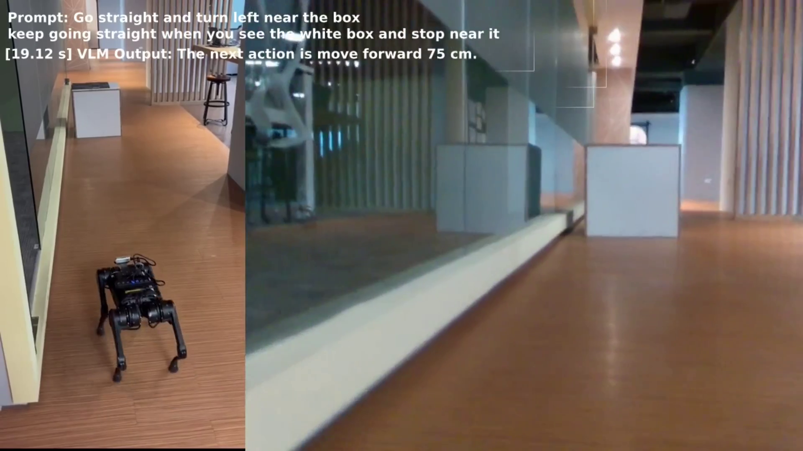
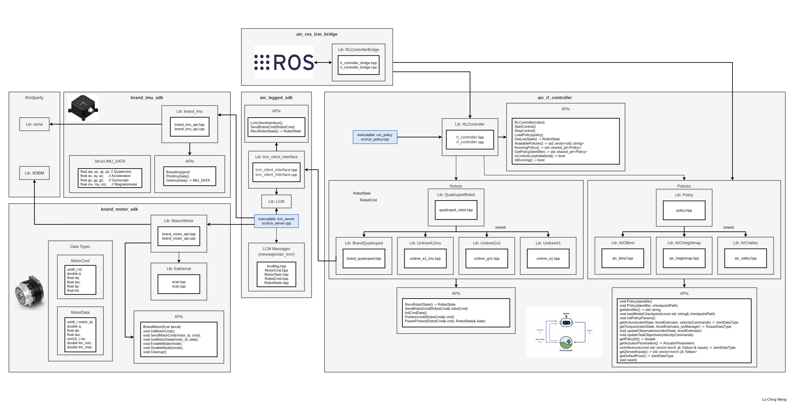

Projects
VL-N3RD-Bench: Benchmarking Vision-Language Navigation with 3D Gaussian Splatting Reconstruction for Deployment

We propose VL-N3RD-Bench, a benchmark for Gaussian Splatting pipelines that evaluates reconstruction quality,
efficiency, and their impact on Vision-Language Navigation (VLN) using public and custom datasets.
Experiment results show that overall reconstruction quality can align with stronger indoor VLN performance, but
this relationship is inconsistent, and strong image-based metrics alone do not guarantee better outdoor
navigation when geometry and traversability become more important.
Vision-Language Navigation (VLN)

This work, NaVILA, is proposed by Cheng et al. and presents a vision-language action (VLA) model for
legged robot navigation.
Please refer to their website
for more details.
We demonstrate its deployment on a Unitree A1 quadruped performing indoor tasks.
The VLA model is executed on an RTX 5090 server, with communication handled via UDP.
A detailed setup guide is provided for RTX 50-series GPUs and newer Ubuntu environments.
Feasibility-Guided Planning over Multi-Specialized Locomotion Policies

We present a feasibility-guided planning framework that enables coordinated navigation across complex terrains
through multiple specialized locomotion policies.
Our contribution focuses on the joint training paradigm while maintaining interpretable policy selection and
supporting integration of new locomotion skills without retraining.
The planning system achieved a 98.60% success rate in simulation and 70% in the real world on mixed terrain.
Quadruped Robots SDK Development / Sim-to-Real Deployment

Building up quadruped robot interface for customized actuators and sensors through LCM communication.
Training locomotion policy from IsaacGym and IsaacLab. C++ deployment and parameters (action scales, motor
gains) fine-tuning.
Quadruped Robot Challenges (QRC)

Navigation deployment from our research: Feasibility-Guided Planning over Multi-Specialized Locomotion Policies.
ROS2 integration on navigation, locomotion, manipulator teleoperation and image detection.
Successfully traversed multiple extreme terrain autonomously.
Tomato Harvesting Robot with Dual-Camera Image-Based Visual Servoing

This paper presents a self-built tomato harvesting robot with dual-camera IBVS algorithm implemented to solve
the dislocation problem.
In the greenhouse experiment, the harvesting time is reduced from 21.2 to 6.26 seconds by the cumulative error
compensation,
and the success rate for picking tomatoes is 68.4%.